What the CRO selects
Selected clusters, consistency across seeds and sharing between sites.
Selection matrices
Local fields: clusters selected at each site by 0–3 of the 3 CRO seeds
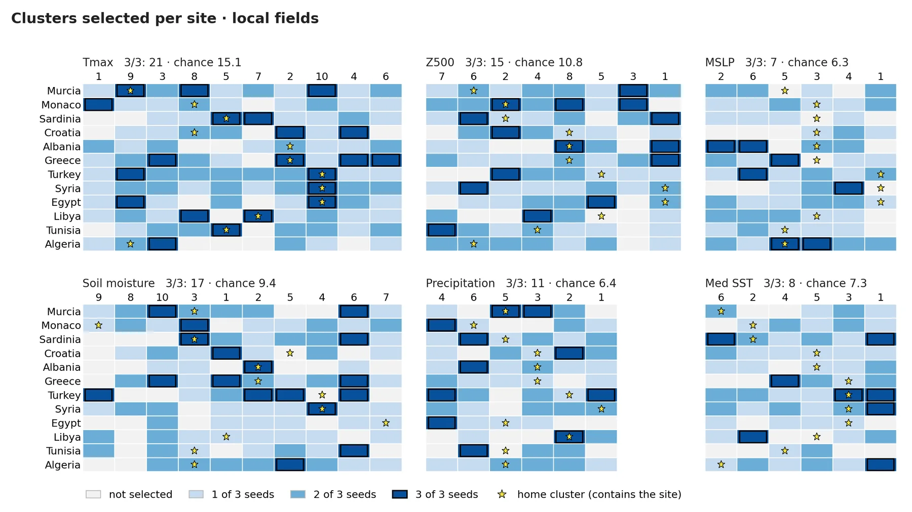
About this figure
Rows are sites and columns are the clusters of each local field, ordered west to east by centroid. Cell colour = number of seeds (0–3) that selected the cluster, black frame = all 3 seeds, star = the site's home cluster (the one containing the site); each panel title gives the observed number of 3/3 pairs and the chance expectation. Over all fields and the three indices, 99 site–driver pairs are selected by all 3 seeds vs 71.6 expected by chance, and the home Tmax cluster is selected by at least 2 of 3 seeds at all 12 sites.
presentacion/figuras/04a_matrix_local.png
Remote fields and indices: clusters selected at each site by 0–3 seeds
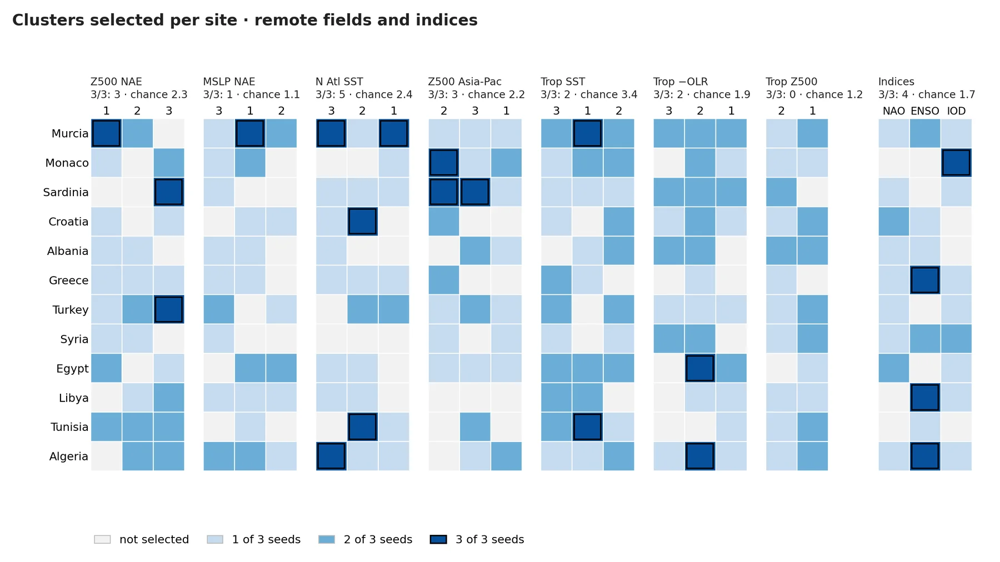
About this figure
Same layout as the local matrix, for the seven remote fields and the NAO, ENSO and IOD indices; the home cluster is not marked. The number of pairs selected by all 3 seeds is at chance level except for North Atlantic SST (5 vs 2.4 expected) and the indices (4 vs 1.7). 'Trop −OLR' is the net top-of-atmosphere longwave flux (= −OLR).
presentacion/figuras/04b_matrix_remote.png
Robust within-year precursors by site
Robust within-year precursors per site and field: seeds with ≥1 driver
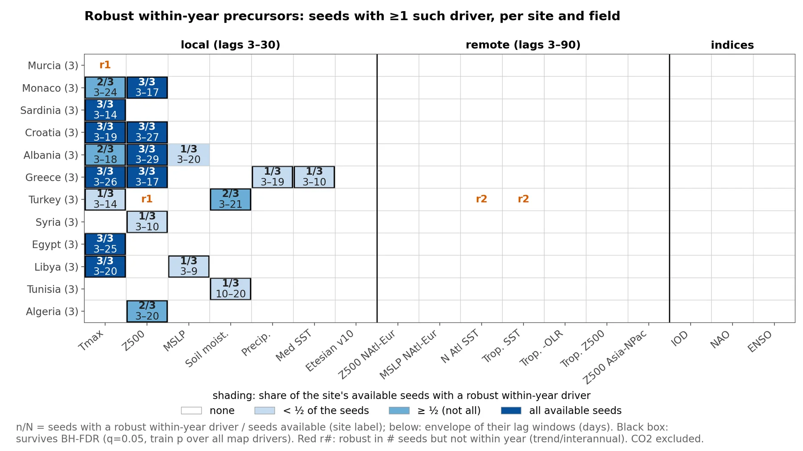
About this figure
Each cell gives the number of seeds (n/N) in which the CRO selected at least one driver of that field that is robust within year (train year-permutation p < 0.05, same sign with p < 0.05 on test, and a significant within-year composite), with the envelope of their lag windows (days) below; shading is the share of seeds, a black box marks survival of Benjamini–Hochberg FDR (q = 0.05), and red r# gives the number of seeds with a driver of that field that is robust but not within year. All 48 robust within-year drivers are local, mostly Tmax and Z500; no remote field or index gives one. This slide leaves out the small grey counts of seeds that selected each field, which the non-slide version shows.
general/figuras/slides/S02a_robust_matrix.png
Robust within-year precursors per site and cluster across the 3 seeds
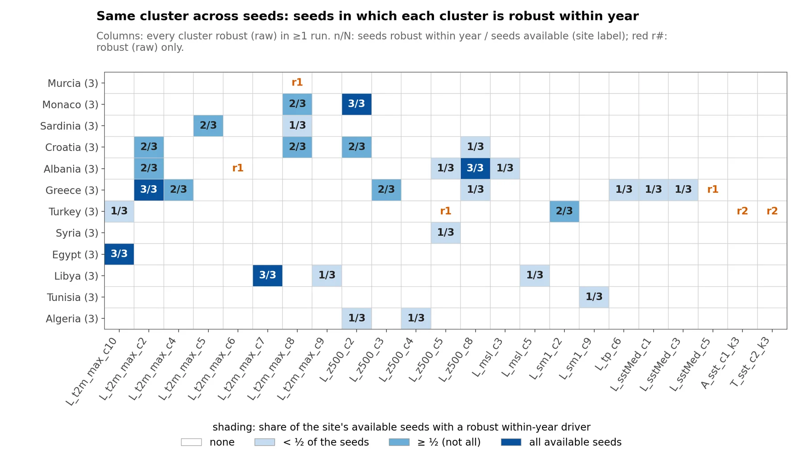
About this figure
Columns are all clusters that are robust in at least one run; cells give the seeds in which that cluster is also robust within year (n/N), shaded by share of seeds, and red r# marks clusters robust only in raw composites. The same cluster is robust within year in all 3 seeds only for Monaco (L_z500_c2), Albania (L_z500_c8), Greece (L_t2m_max_c2), Egypt (L_t2m_max_c10) and Libya (L_t2m_max_c7).
general/figuras/slides/S02b_robust_clusters.png
Robust precursors across seeds
Robust within-year precursors per site and field: seeds with ≥1 such driver
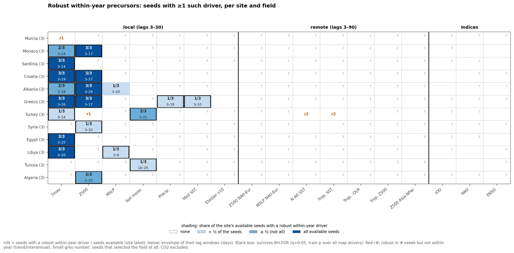
About this figure
Rows are sites (seeds available in brackets) and columns are local fields (lags 3–30), remote fields (lags 3–90) and indices; shading and n/N give the share of seeds with at least one robust within-year driver (year-permutation p < 0.05 in train, same sign with p < 0.05 in test, and a within-year composite that is significant in train with the same sign in train and test), with the envelope of their lag windows (days) below. Black box = survives Benjamini–Hochberg FDR on train p; red r# = robust in # seeds but not within year; small grey number = seeds that selected the field. Only local Tmax and Z500 reach 3/3 seeds (9 site–field pairs), and no remote field or index has a robust within-year driver.
general/figuras/02a_robust_matrix.png
Selection frequency of clusters
Selection frequency of each KMeans cluster across the 36 runs, by field
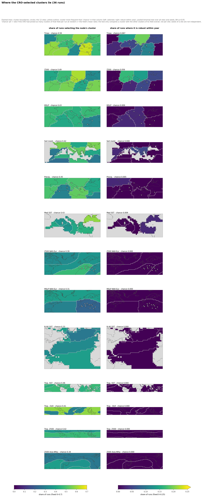
About this figure
Left: share of the 36 runs that select each node's KMeans cluster (fixed scale 0–0.7); right: share of runs in which that cluster is robust within year (0–0.25); dashed lines are cluster boundaries, circles are the 12 sites, and 'chance' in each panel title is the rate expected if the CRO picked the same number of clusters of that field per run at random. Observed selection frequencies range from 0.22 to 0.64 against chance rates of 0.31–0.50, and no cluster is selected (or robust within year) more often than chance after BH correction, so no yellow outline appears. The test pools all sites and seeds, which are not independent, so its p-values are only indicative.
general/figuras/04a_selection_frequency_all_fields.png
Selected local clusters per site: share of seeds selecting each cluster
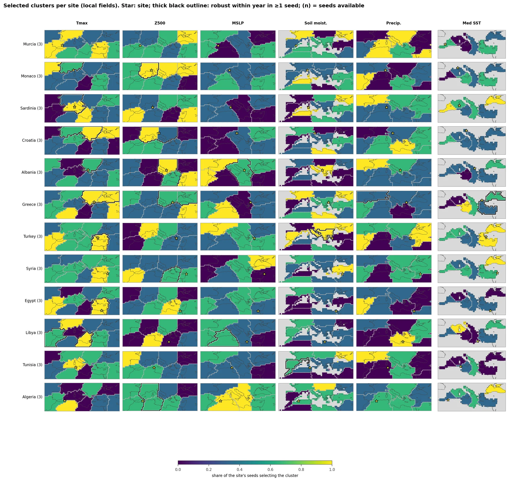
About this figure
Rows are sites (3 seeds each) and columns are the KMeans clusters (dashed boundaries) of local Tmax, Z500, MSLP, soil moisture, precipitation and Mediterranean SST, coloured by the share of that site's seeds that selected each cluster (0–1). The star marks the site, and a thick black outline marks clusters that are robust within year in at least one seed of that site.
general/figuras/04b_selection_by_site_local.png
Selection frequency maps
Selection frequency of each local cluster across the 36 runs
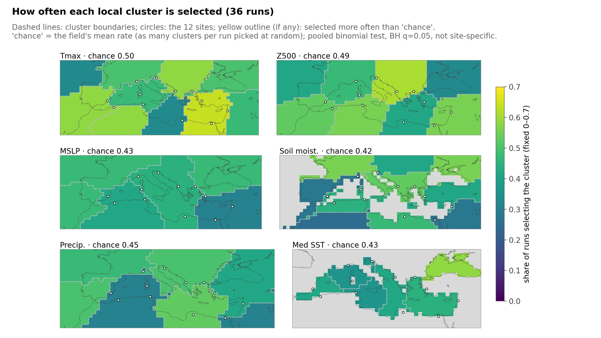
About this figure
Each grid point is coloured by the share of the 36 runs in which the CRO selected its cluster (fixed scale 0–0.7); dashed lines are cluster boundaries, circles are the 12 sites and grey areas have no data (sea for soil moisture, land for SST). Panel titles give the field's chance rate (its mean selection rate per cluster). No cluster is selected more often than chance (pooled binomial test over all sites and seeds, BH q = 0.05).
general/figuras/slides/S04a_selection_frequency_local.png
How often each local cluster is a robust within-year driver (36 runs)
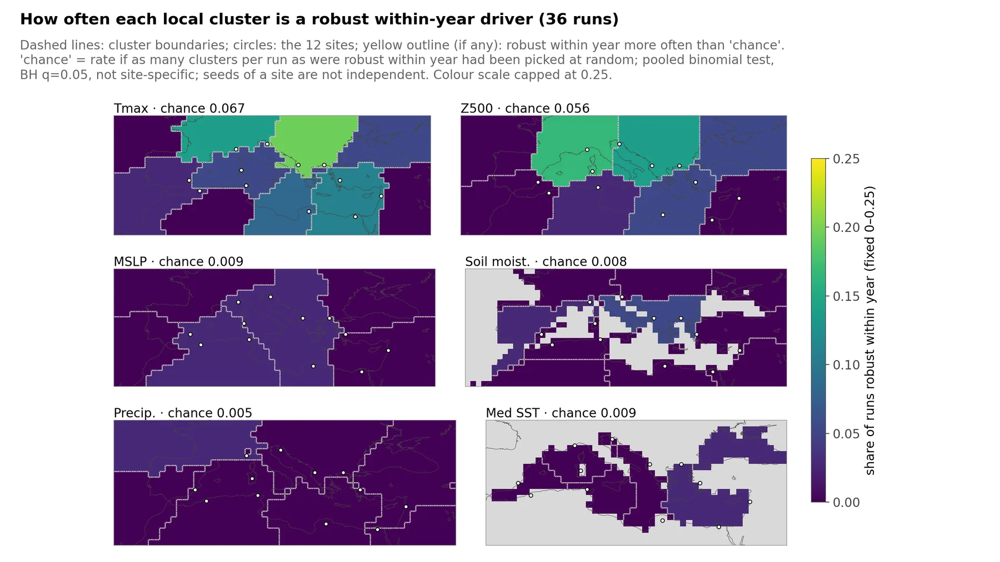
About this figure
Each grid point is coloured by the share of the 36 runs in which its cluster is a robust within-year driver (scale capped at 0.25); dashed lines are cluster boundaries and circles are the 12 sites. Panel titles give the chance rate, i.e. the rate if as many clusters per run as were robust within year had been picked at random. The most frequent are Tmax and Z500 clusters (up to 7 of 36 runs); none is robust within year more often than chance under the pooled test.
general/figuras/slides/S04b_robust_frequency_local.png
Selection frequency of each remote cluster across the 36 runs
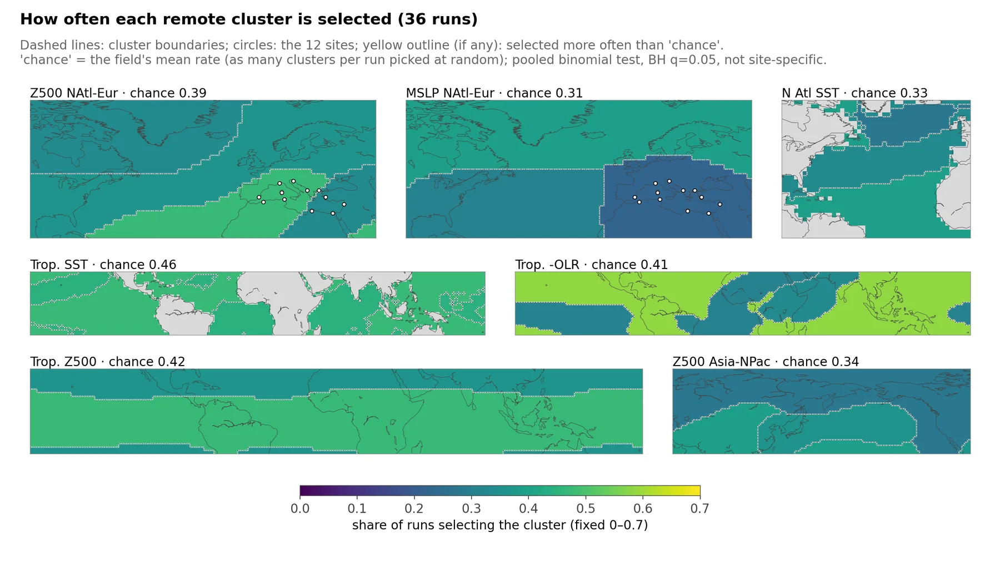
About this figure
Share of the 36 runs in which the CRO selected each remote cluster (fixed scale 0–0.7) for the North Atlantic–Europe, North Atlantic SST, tropical and Asia–North Pacific fields; panel titles give each field's chance rate. No remote cluster is selected more often than chance (pooled binomial test, BH q = 0.05), and none is ever a robust within-year driver, so there is no robust-frequency map for remote fields.
general/figuras/slides/S04c_selection_frequency_remote.png
Sharing between sites
Similarity of the 3/3 cluster sets between sites (Jaccard) vs distance
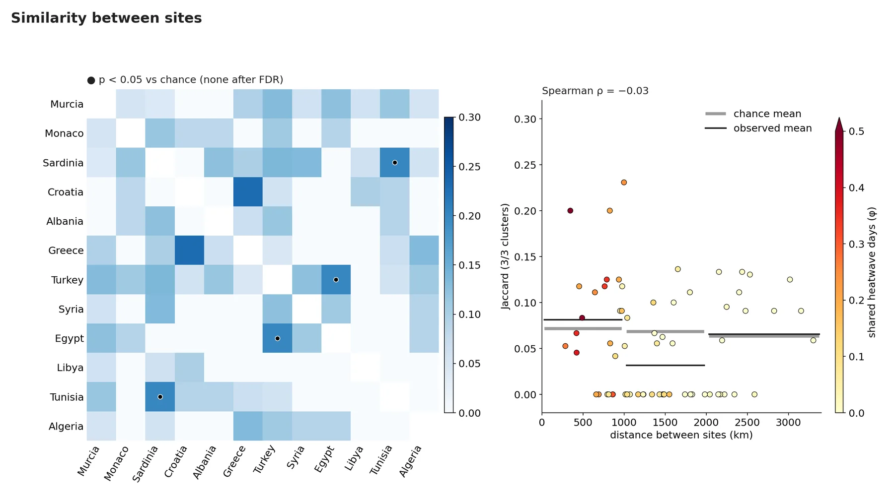
About this figure
Left: Jaccard overlap between the sets of clusters (13 fields, indices excluded) that each pair of sites selected in all 3 seeds; dots mark the 2 of 66 pairs with p < 0.05 against the chance model (Sardinia–Tunisia and Turkey–Egypt), neither significant after FDR correction. Right: Jaccard vs distance between sites, points coloured by the overlap of heatwave days (φ); black lines show the observed mean and grey lines the chance mean per distance band (< 1000, 1000–2000, > 2000 km). Sites share no more clusters than expected by chance (mean Jaccard 0.058 vs 0.068, p = 0.93), and similarity does not depend on distance (Spearman ρ = −0.03).
presentacion/figuras/04d_similarity.png
Local clusters coloured by the number of sites selecting them in 3/3 seeds

About this figure
Each local cluster is coloured by how many of the 12 sites selected it in all 3 seeds (white = no site, light grey = nodes not used); black dots are the sites. The highest count is soil moisture c6, north of the Black Sea (5 sites vs 1.7 expected by chance, p = 0.013), but it is not significant after false-discovery-rate correction (q = 0.73); no cluster is shared by more sites than chance after that correction.
presentacion/figuras/04c_shared_local.png